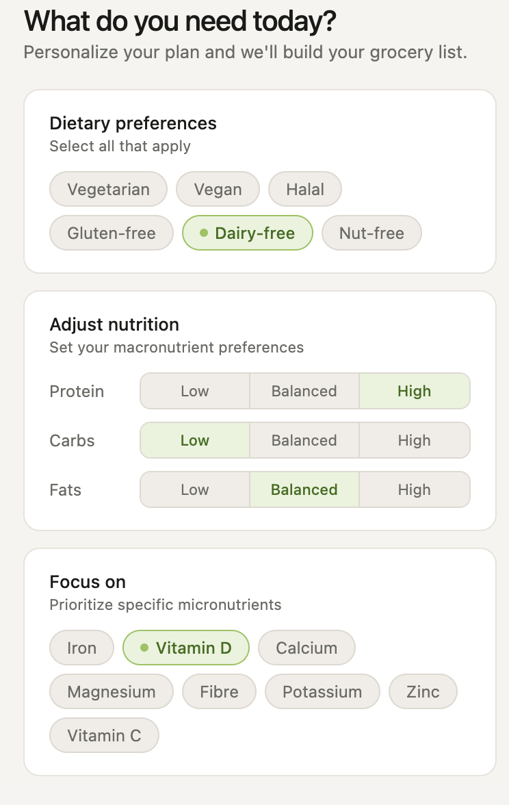
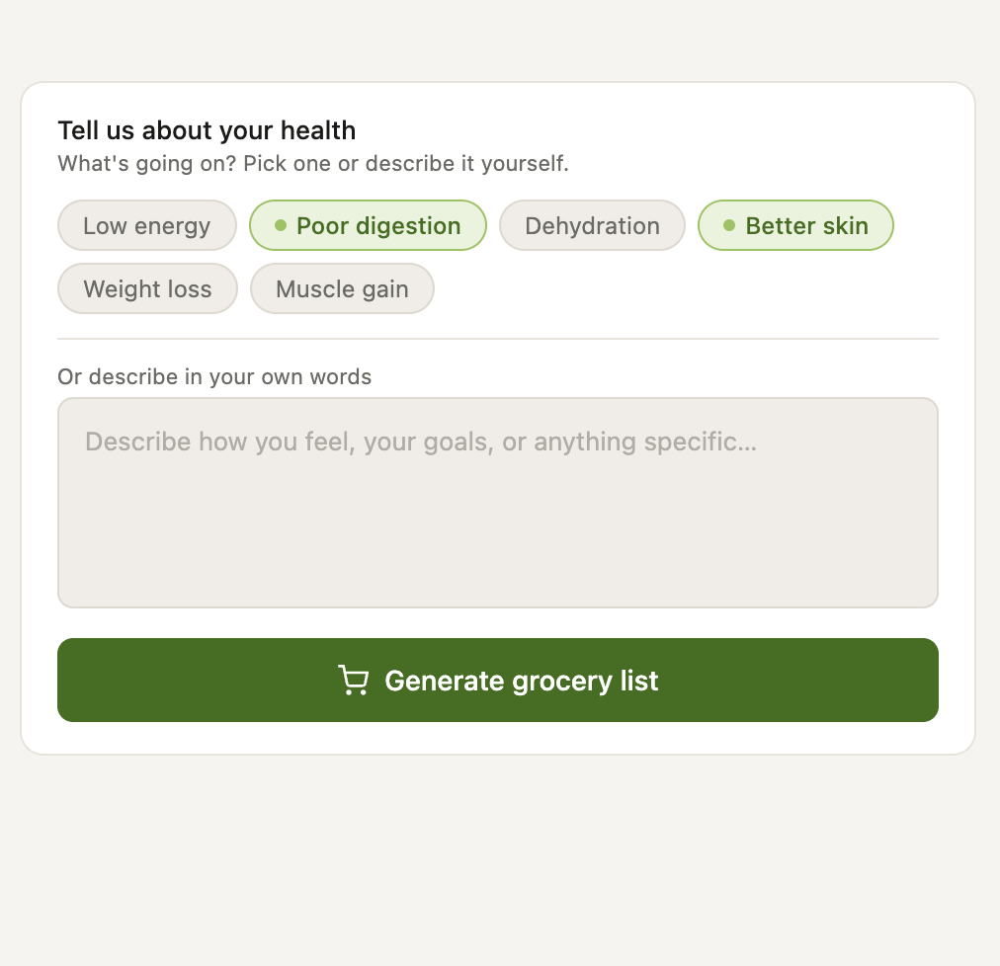
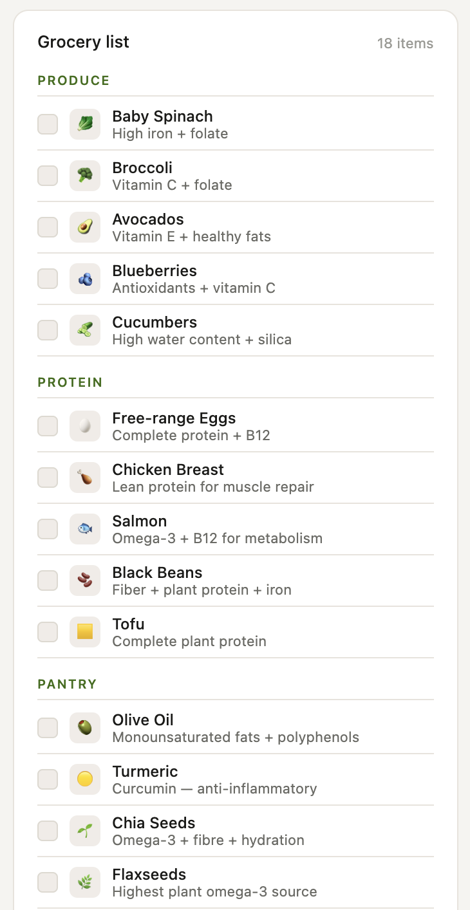
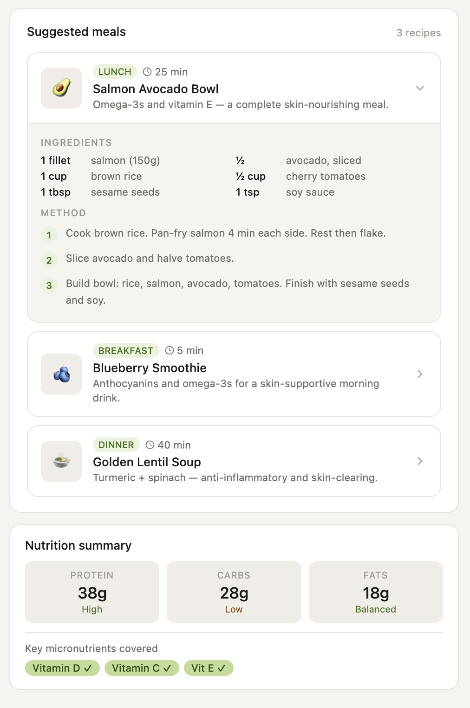
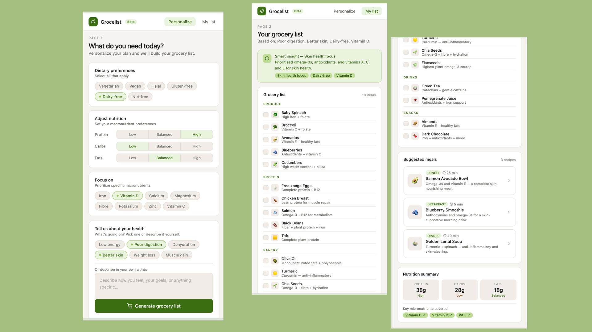

Grocelist — AI-powered grocery planning, built from scratch
A personalized grocery list and meal planning web app that translates health goals and dietary restrictions into specific, actionable shopping lists — reducing decision fatigue through intelligent, real-time recommendations.

The problem
ContextMost grocery planning tools treat shopping as a list-making exercise. The real challenge is upstream: people don't know what to buy because nothing connects their current health state to specific food choices. "I feel tired" doesn't automatically become "buy spinach, lentils, and oats" — and that translation gap is exactly where planning breaks down.
Existing apps offer generic recommendations ("eat more vegetables") with no rationale, ignore dietary restrictions as an afterthought, and leave recipe context entirely out of the flow. The result is decision fatigue at the shelf and a grocery list that doesn't feel personal.
"How might we build a system that understands someone's health in their own words, and turns that into a grocery list they actually trust?"
Planning & discovery
What I learnedBefore any screens were drawn, I mapped how users actually think about food decisions — not in macronutrients or micronutrients, but in symptoms and feelings. "I've been tired all week," "my skin keeps breaking out," "I feel dehydrated after training" — these are the real inputs people bring to the problem. The product had to meet them there.
I also audited comparable nutrition and meal planning apps to find where they consistently fell short: dietary restriction handling was almost always buried in settings, recipe suggestions were decorative rather than actionable, and the connection between input and output was opaque — no explanation of why a recommendation was made.
Key findings
Users think in symptoms, not nutrients — so the input model had to use language like "low energy" and "better skin," not "increase iron intake." Trust depended on explanation: a list without reasons feels arbitrary. Dietary restrictions caused real anxiety when they weren't visibly applied and confirmed. And recipe context was the difference between a list someone acts on and one they ignore.
Design process
How I got thereThe project moved through several distinct iterations, each driven by a specific piece of feedback or observed friction. The most significant shifts came from realizing that the layout needed to match the mental model of the task — not a dashboard, but a two-step journey from personalization to results.
| Wireframe | Hand-sketched a two-panel home layout — dietary inputs and nutrient controls on the left, health description and CTA on the right — establishing the spatial structure before any code was written. |
| Layout | Removed an early left sidebar in favour of a minimal top nav with two tabs. Grocery planning is a sequential task, not a dashboard — sidebar navigation added visual weight without value. |
| Results page | Moved results out of a right panel into a dedicated full page. The three-column input+results layout felt overwhelming; giving the list its own page reduced cognitive load and made both experiences feel intentional. |
| Intelligence | Wired up real logic behind every input. Health chips and freetext map to six intents (energy, skin, hydration, workout, digestion, weight), which drive the grocery list, recipes, insight banner, and nutrition summary simultaneously. |
| Components | Replaced continuous sliders with segmented controls (Low / Balanced / High) for macros. Expanded recipe cards from a name-and-description to a full expandable view with ingredient lists and step-by-step method. |
| Delivery | Shipped as a single self-contained HTML file — no build step, no backend, deployable to any static host in under a minute. |
Personalize page
The left panel handles everything the system needs to know before generating: dietary restrictions as selectable chips (Vegetarian, Vegan, Halal, Gluten-free, Dairy-free, Nut-free), macro preferences as segmented Low / Balanced / High controls, and micronutrient focus chips (Iron, Vitamin D, Calcium, Magnesium, Fibre, Potassium, Zinc, Vitamin C). The right panel takes the health context — quick-select chips for common states plus a free-text box for anything else — and houses the generate CTA.

Left panel — dietary restrictions, macro controls, and focus nutrients

Right panel — health chips, freetext input, and generate CTA
Results page
The results page opens with a smart insight banner that summarizes what the system detected and what it added in response — making the AI reasoning visible and building trust. Below it, a two-column layout puts the grocery list (categorized by Produce, Protein, Pantry, Drinks, Snacks, with checkboxes and nutritional rationale on each item) alongside the recipe panel (three expandable recipe cards with full ingredients and method). A nutrition summary card at the bottom reflects the user's macro selections with live values.

Grocery list — categorized with checkboxes and per-item rationale

Recipe cards — expandable with full ingredients and step-by-step method
Design decisions
The table below captures the most significant choices made across the project — what changed, what was added, and what was removed, and why each decision was made.
| Element | Before | After | Reason | |
|---|---|---|---|---|
| Navigation | Left sidebar with Home + Profile | Top nav, two tabs only | Sidebar added visual weight without value for a two-state app | Changed |
| Results placement | Right panel alongside inputs | Separate full page | Three-column layout felt overwhelming; results deserve full focus | Changed |
| Macro inputs | Continuous sliders (0–100g) | Segmented control (Low / Balanced / High) | Sliders required too much precision; segments are faster and clearer | Changed |
| Recipe display | Name + one-line description only | Expandable with ingredients + steps | Users need the full recipe to act on the recommendation | Changed |
| Item explanations | Not present | One-line rationale on every item | Without reasons, the list feels arbitrary; explanations build trust | Added |
| Insight banner | Not present | Top of results, summarizes AI logic | Makes the system feel transparent rather than like a random list | Added |
| Component states panel | Shown on Personalize page | Removed entirely | Was a design artifact, not a user experience | Removed |

Keeping responsive design approach in mind
Outcome & impact
ResultsThe final product is a fully reactive, self-contained web app where every input — dietary chips, macro controls, focus nutrients, health chips, and freetext — updates the grocery list, recipes, insight banner, and nutrition summary simultaneously on generate. Items incompatible with dietary restrictions are automatically excluded. Each recipe includes a full ingredient list and step-by-step method, bridging the gap between list and kitchen.
The system makes its reasoning visible at every step: the insight banner explains what it detected and why it added specific items; every grocery item carries a one-line nutritional rationale; the nutrition summary reflects the user's exact macro selections with live values. Nothing is opaque.
What shipped
A single deployable HTML file — no backend, no build step, live on any static host.
Reflections
The biggest lesson was that decorative interactivity is worse than no interactivity at all. Early builds had chips and controls that looked like they did something but didn't — users assumed the product was broken. Wiring up real logic behind every input changed the feel of the product entirely.
The separation of input and results into distinct pages was also a turning point. The instinct was to show everything at once, dashboard-style. But grocery planning is a sequential task — you plan, then you shop. Matching the layout to that mental model made both screens feel cleaner and more purposeful.
If this were a real product, the next steps would be replacing keyword logic with a language model API, connecting to a supermarket API (Instacart, Tesco) to close the gap between list and cart, and rebuilding the interface as a mobile-native app — since grocery shopping happens on the phone, in the aisle.